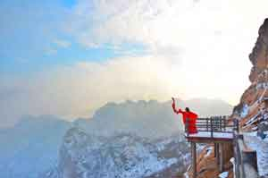
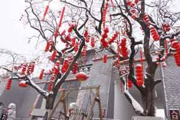
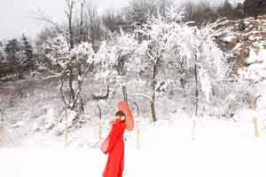
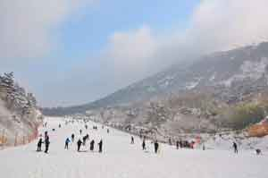
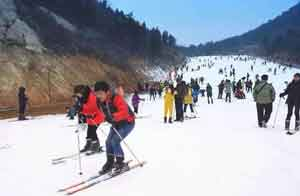

冬季来了 不去滑雪等着在家窝着长肉么 ？

中原最美滑雪场，方城七峰山滑雪场由方城县七顶山旅游开发有限公司斥资3000万元兴建，位于风景如画的国家AAAA级景区——七峰山生态旅游区后山腹地，最高海拔768米。 七峰山滑雪场内设备先进，购进了欧洲最先进雪具、雪上游乐设施、造雪设备。七峰山滑雪场娱乐项目丰富，总占地面积约6平方公里，可同时容纳2000人进行雪上娱乐项目。 雪场近2000平方米的服务大厅，以及综合星级宾馆别墅、西餐咖啡厅等配套服务设施和周边景观带，可为游客提供全方位最优质的服务。 因雪场周围环境优美，被誉为中原最美滑雪场。 来到这里滑雪的同时，还可以一览国家4A级景区——七峰山的秀美风光！景区精华部分景点如高空玻璃桥、民俗博物馆、观音阁等都在滑雪场附近哦。 滑雪、赏景两不误！ 方城·七峰山滑雪场欢迎您！ 七峰山滑雪场地址： 河南省南阳市方城县杨集乡七峰山生态旅游区 服务热线037767358999



七峰山滑雪场2017年度巨献1折秒杀活动即将开启！！！不同于以往的优惠或现场活动，这次活动七峰山滑雪场可谓是大动作大手笔大情怀，活动力度之大连小编都觉得振奋不已。下面是活动内容，有任何不清楚不明白的尽管骚扰我们的客服小姐姐。
这个小编需要特别强调一下，这个秒杀活动跟抢红包一样，就是拼手速咯！因为该电子卡券发放数量有限，而且每人限领1张， 晚一秒就可能被抢光光~ 教程在此： 1.为避免错过我们的重磅信息，请务必先关注景区的官方微信。 2.活动开启时，景区会通过官方微信平台发布一条文章推送，而在文章内容页面里，我们存放了2000张“七峰山滑雪场1折优惠券”，点击“领取”即可，卡券会自动保存在你的微信卡包里。 3.在使用时，拿出手机，打开卡包，找到该卡券让工作人员核销后即可。 4.领取时不会扣除任何费用。 5.卡券使用时间为：2017年12月12日~12月31日周一至周五，滑雪不限时！（雪场开业时间大约在12月中旬左右） 6.滑雪原价为：100元。使用该券后为10元（不含保险），10块钱包含 景区门票+ 双程观光车票+ 免费讲解员服务 + 滑雪票。 10块钱就可以滑雪啦，开不开心？激不激动？